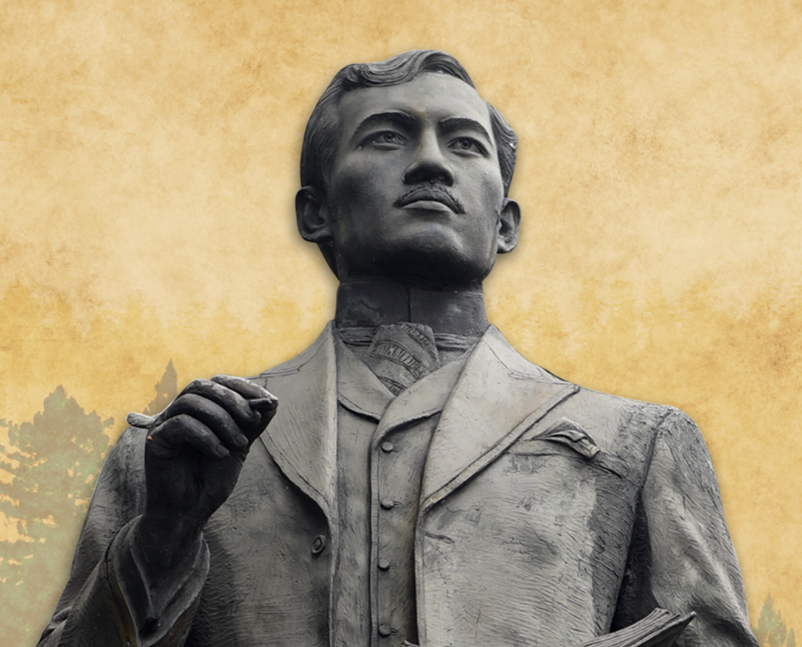
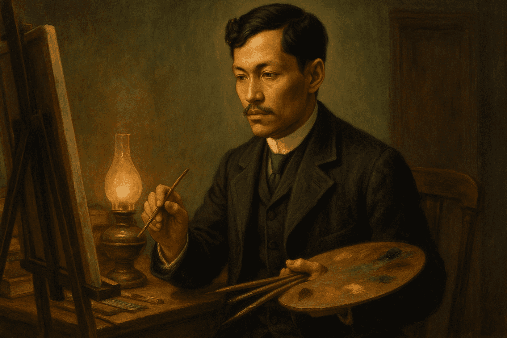
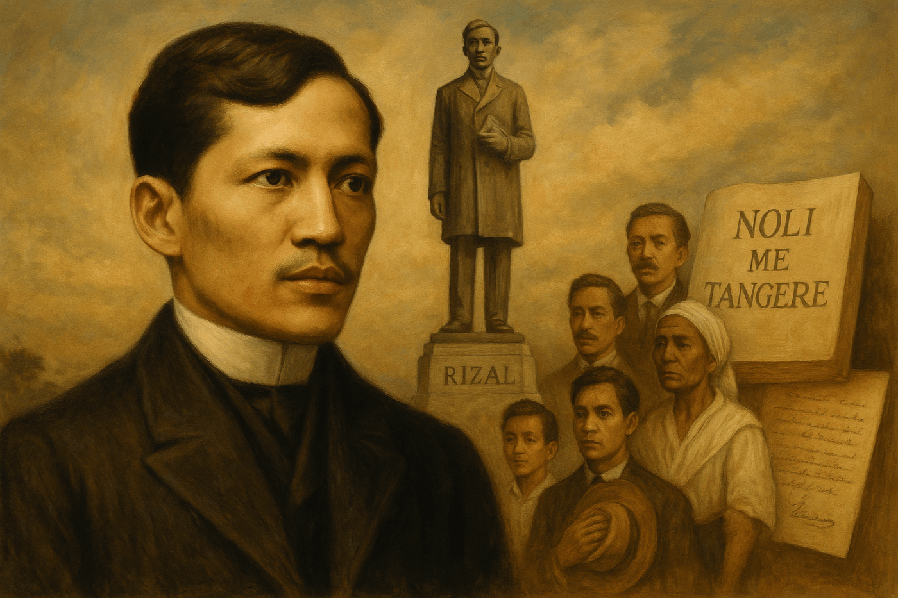
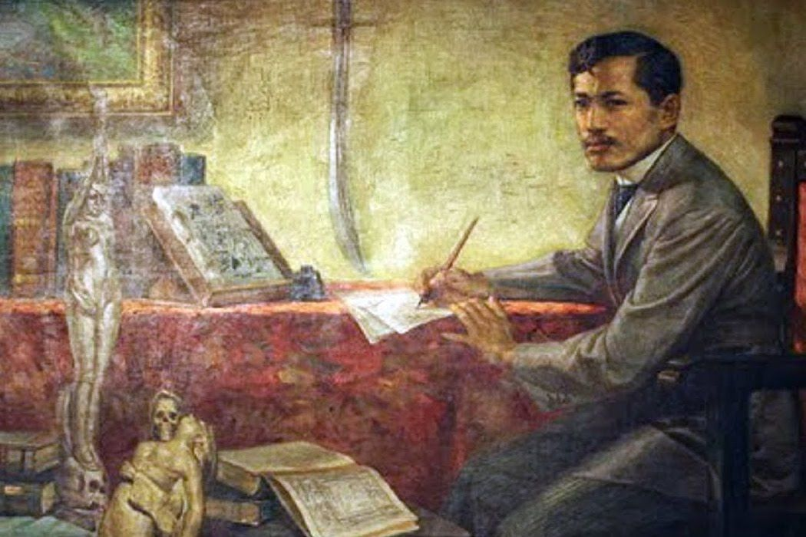

Legacy
A Visitor’s Guide to Rizal Park
What to see, do, and experience in Manila's historic green sanctuary dedicated to the national hero.
Read More →HERITAGE • INTELLECT • NATION
Ophthalmologist, novelist, polyglot, and national hero. Explore the enduring life, masterpieces Noli Me Tangere & El Filibusterismo, and the radical ideas that shaped a nation.

On December 30, 1896, José Rizal was executed by the Spanish colonial government at Bagumbayan (now Luneta Park). His martyrdom ignited the Philippine Revolution. Although other heroes like Andrés Bonifacio fought with arms, Rizal was proclaimed the foremost national hero because his writings became the ideological blueprint for independence. His novels Noli Me Tangere and El Filibusterismo exposed centuries of colonial injustice and religious hypocrisy, awakening the Filipino identity. Rizal Law (RA 1425) mandates the teaching of his life, works, and writings in all Philippine schools, ensuring his legacy transcends generations. Beyond the archipelago, global monuments in Madrid, Tokyo, San Diego, and UNESCO's recognition of his literary genius affirm his universal impact. National shrines in Calamba, Dapitan, Fort Santiago, and Luneta Park preserve his memory as the hero who chose pen over sword, yet died for the nation’s freedom. Rizal didn't just write about freedom — he gave the Filipino people permission to imagine a nation.




Rizal was deeply influenced by Harriet Beecher Stowe's "Uncle Tom's Cabin", Victor Hugo's works, and the European Enlightenment thinkers like Voltaire and Rousseau.
Exposure to Freemasonry and the Propaganda Movement in Spain shaped his calls for equality, representation, and secular education.
Unlike Bonifacio, Rizal championed civic awakening and institutional change, believing that true revolution begins in the mind.
Scholars, historians, and digital storytellers united to preserve Rizal's enduring legacy.
A chronological journey through the hero’s childhood, European enlightenment, exile, and martyrdom.
On June 19, 1861, José Protasio Rizal Mercado y Alonso Realonda was born to Francisco Mercado and Teodora Alonso. The seventh of eleven children.

The martyrdom of Fathers Gomez, Burgos, and Zamora deeply affected Rizal. His brother Paciano had been a student of Burgos. This event ignited his sense of injustice.

Rizal won first prize for his poem "A la juventud filipina," proclaiming the youth as the hope of the fatherland. "The youth is the hope of our future."

Rizal left the Philippines under the name "Jose Mercado" to avoid family persecution, traveling to Spain to continue medical studies.

With the help of friend Maximo Viola, Rizal published his first novel, exposing colonial abuses. Banned immediately but smuggled into the Philippines.

After founding La Liga Filipina, Spanish authorities arrested Rizal and exiled him to Dapitan, where he spent four years teaching, building, and discovering species.

After a sham trial, Rizal faced the firing squad at 7:03 AM. His death galvanized the Philippine Revolution, making him an enduring symbol of national sacrifice.

Novels, poems, essays, and letters that ignited the Philippine Revolution.
"Touch Me Not" — a searing indictment of Spanish colonial rule and the Catholic clergy. 64 chapters. Translated into 30+ languages. It remains a cornerstone of Filipino literature.
Read full analysis →"The Reign of Greed" — the darker sequel dedicated to Gomburza. Simoun plots a violent revolution, raising profound questions about justice and sacrifice.
Explore chapter summaries →"My Last Farewell" — written on the eve of his execution, this 14-stanza poem became the anthem of Filipino patriotism.
Read the poem →"A la juventud filipina" — Rizal's prize-winning poem that proclaimed the youth as the hope of the fatherland.
Read full text →"Filipinas dentro de cien años" — a prophetic essay predicting the decline of Spanish rule and the rise of American influence.
Read the essay →Rizal annotated Antonio de Morga's "Sucesos" to prove that Filipinos had a rich civilization before colonization.
Discover the annotations →Deconstructing Rizal's ideologies, literary techniques, and revolutionary impact.
Unlike contemporaries who advocated armed revolution, Rizal believed in the power of education, civic engagement, and intellectual awakening. His novels were not calls to arms but mirrors reflecting colonial hypocrisy.
Rizal masterfully employed European realism to depict Philippine society. Characters like Padre Dámaso and Sisa become archetypes—the abusive friar, the idealistic reformist, the suffering mother.
A recurring theme: Rizal distinguished between the Catholic Church as an institution and spiritual faith. His excommunication did not signal atheism but a rejection of clerical authority.
• Colonial Mentality & National Identity
• Women in Rizal: Maria Clara as victim vs. empowerment
• The retraction controversy
• Rizal's masonic influences and European liberalism
How one man's sacrifice shaped the destiny of a nation.
Proclaimed the foremost national hero of the Philippines. December 30 is Rizal Day.
Mandates the teaching of Rizal's life, works, and writings in all Philippine schools.
Monuments in Madrid, Tokyo, San Diego honor his memory. UNESCO recognizes his literary contributions.
National shrines in Calamba, Dapitan, Fort Santiago, and Luneta Park preserve his memory.
"Rizal didn't just write about freedom — he gave the Filipino people permission to imagine a nation."
— National Artist F. Sionil José
Original manuscripts, intimate letters, rare photographs, and official documents from Rizal's life.
Rizal's farewell poem written on the eve of his execution. 14 stanzas in Spanish.
View scanned document →Describes his return to the Philippines and concerns about persecution.
Read transcription →Official military court records from Rizal's sham trial.
Access PDF →Complete collection of Rizal's essays including "The Indolence of the Filipino."
Browse issues →The digital archives are updated in partnership with the National Historical Commission of the Philippines, the Rizal Shrine Library, and the Biblioteca Nacional de España.